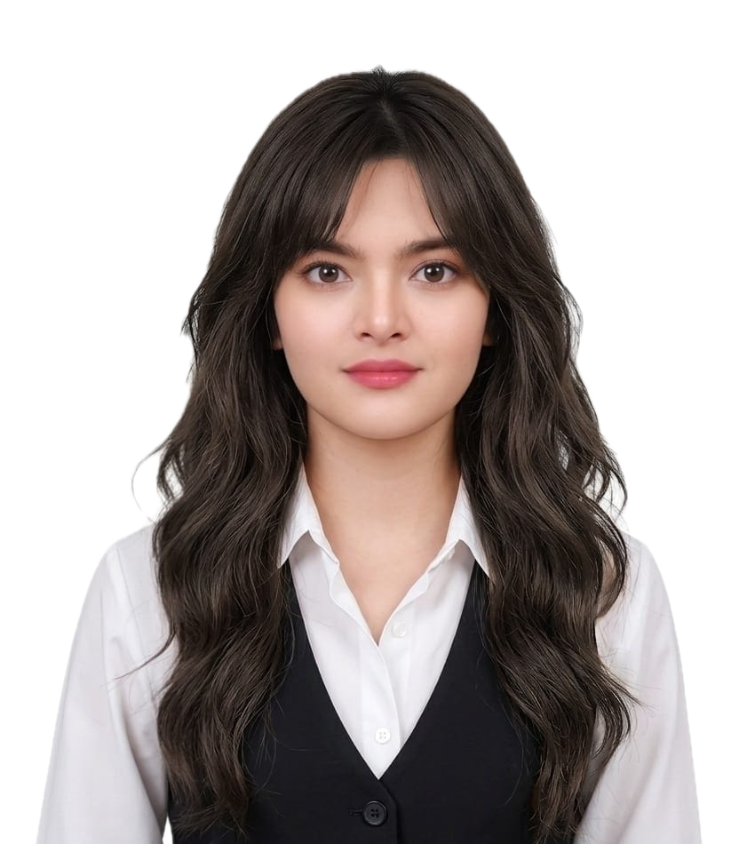

Portfolio
AI Researcher | Deep Learning, Computer Vision & Medical Imaging
I'm an integrated M.S.–Ph.D. researcher at Ewha Womans University working on AI methods for medical ultrasound imaging. My research combines deep learning, computer vision, and signal processing to develop reliable algorithms for understanding vascular motion and tissue dynamics from ultrasound data. I work across the full research pipeline—from exploring ultrasound data representations and designing neural network architectures to validating methods on simulated and clinical datasets. More broadly, I'm interested in building AI systems that bridge rigorous engineering with practical healthcare applications.
Research Focus
Publications
C-Siam: a complex-valued Siamese network for ultrasound-based vascular motion estimation
Biomedical Signal Processing and Control
Sensorless force imbalance prediction based on visual information for robotic ultrasound scanning
IEEE Robotics and Automation Letters
2D motion tracking for vascular wall in ultrasound imaging
International Conference on Electronics, Information, and Communication
Generative adversarial networks for data augmentation
Data Driven Approaches on Medical Imaging
Conferences & Presentations
Extended Analysis of Siamese Networks for Complex Ultrasound Data Poster Presentation
66th Korean Society of Medical & Biomedical Engineering Fall Academic Conference
Compared unified vs. split network designs for processing complex-valued ultrasound data in motion tracking.
Deep Complex Network for Vascular Wall Motion Tracking in Ultrasound Imaging Poster Presentation
IEEE International Ultrasonics Symposium (IUS)
Preliminary complex-valued network for motion tracking, later developed into published work.
Assessing Complex Data Representations in Siamese Networks for Vascular Wall Motion Tracking Poster Presentation
International Conference on Ultrasound Engineering for Biomedical Applications (ICUEBA)
Investigated methods for handling complex-valued ultrasound data — separating real/imaginary parts, amplitude-phase, and amplitude-only — in motion tracking models.
Comparative Analysis of Ultrasound Data Representations for Vascular Wall Motion Tracking Poster Presentation
65th Korean Society of Medical & Biomedical Engineering Spring Academic Conference
Compared I/Q, RF, and B-mode ultrasound representations for robustness of Siamese-based motion tracking.
Tracking 2D Vascular Wall Motion in In Vivo Ultrasound Imaging Poster Presentation
IEEE Ultrasonics, Ferroelectrics, and Frequency Control Joint Symposium (UFFC-JS)
Extended motion tracking methods from simulation to real in-vivo carotid ultrasound data.
2D Motion Tracking for Vascular Wall in Ultrasound Imaging Oral Presentation
International Conference on Electronics, Information, and Communication (ICEIC)
Used Siamese neural networks to track carotid wall motion in simulated ultrasound data across axial, lateral, and combined motion.
Skills
Deep Learning
Computer Vision
Signal & Image Processing
Programming & Tools
Education
M.S.–Ph.D. Combined Program in Electronics & Electrical Engineering
Ewha Womans University · Fall 2023 - Present